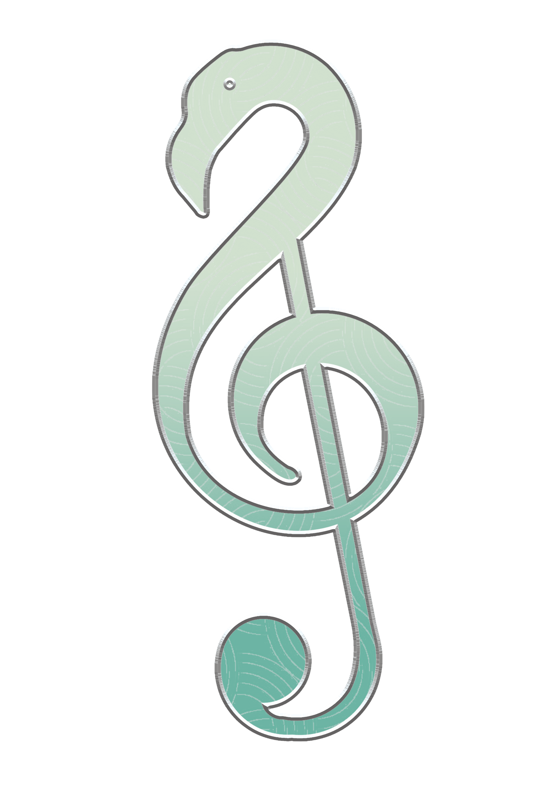

Twibbon Maker Modern
Upload foto atau video kamu, pilih twibbon, atur posisi, lalu klik
Generate
buat download hasilnya 💫
Upload Foto / Video
-- Pilih twibbon --
Twibbon 1
Twibbon 2
Twibbon 3
Generate
Reset